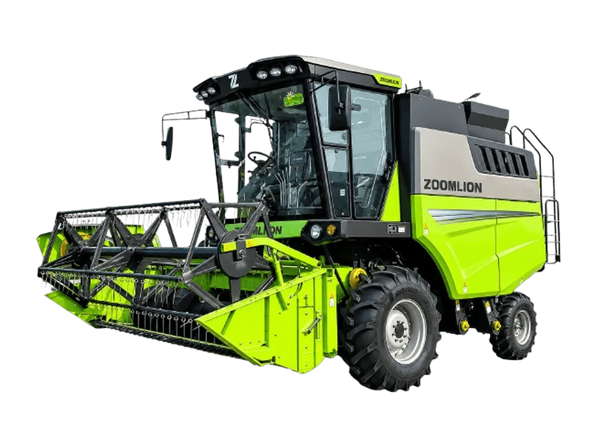

Combine Harvester
Zoomlion TE100
Combine harvester aksial longitudinal yang dirancang untuk gandum, jagung, millet, sorgum, dan komoditas serealia lainnya
Bandingkan dengan unit lain →Keunggulan
- Adaptasi tanaman unggul: sistem perontokan aksial longitudinal tunggal dengan kecepatan silinder dan celah concave yang dapat disetel tanpa jenjang, menghadirkan efisiensi perontokan dan pemisahan yang superior
- Sesuai untuk pemanenan gandum, jagung pipilan, kedelai, padi, dan komoditas serealia lainnya
- Produktivitas tinggi: ditenagai mesin Yuchai 140 kW dengan teknologi turbocharging dan high-pressure common rail
- Dipadukan sistem 4WD hidrostatik, mampu menaklukkan kondisi lahan kompleks dan medan berat dengan mudah
- Kenyamanan operator: kabin mewah bertekanan dan tertutup penuh dengan sistem HVAC, menghadirkan getaran dan kebisingan rendah
- Kursi bersuspensi mewah ergonomis serta spion elektrik standar dengan penyetelan satu sentuhan dari dalam kabin
- Keandalan tinggi: rangka baja berkekuatan tinggi meningkatkan kekuatan struktur lebih dari 50%, dengan bearing PEER impor bebas perawatan pada komponen kritis
Spesifikasi
| Kapasitas Umpan | 10 kg/s |
|---|---|
| Dimensi | 6.100 × 2.900 × 3.420 mm (tanpa header) |
| Berat Operasi | 7.300 kg (tanpa header) |
| Jarak Rendah Ketanah | 420 mm |
| Model Mesin | Yuchai YCA05190-T300 |
| Tipe Mesin | 4 Silinder |
| Kapasitas Tangki BBM | 440 L |
| Sistem Perontokan | Single Axial Rotor |
| Ukuran Drum Perontok | ø620 × 3.180 mm |
| Putaran Drum Perontok | 310–1.030 rpm |
| Luas Area Separasi | 2,5 m² |
| Sistem Pembersihan | Air & Sieve Cleaning System |
| Kapasitas Hopper | 3,6 m³ |
| Kecepatan Pembongkaran | 60 L/s |
| Transmisi | Mechanical + HST |
| Ukuran Ban | 19.5L-24 / 380/70R20 |
| Sistem Gerak | 4WD |
| Rigid Grain Header | 2,96 / 3,25 / 4 m — 726 / 785 / 895 kg |
| Soybean Flex Header | 4 m — 1.200 kg |
| Corn Header | 5×700 / 5×750 / 4×900 — 1.867 / 1.720 / 1.675 kg |
| Multi-Crop Header | 7×410 — 1.100 kg |
Tanya harga & ketersediaan unit
Tim kami siap membantu memilih unit yang sesuai kebutuhan lahan Anda.